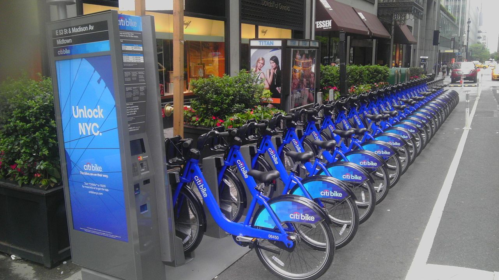
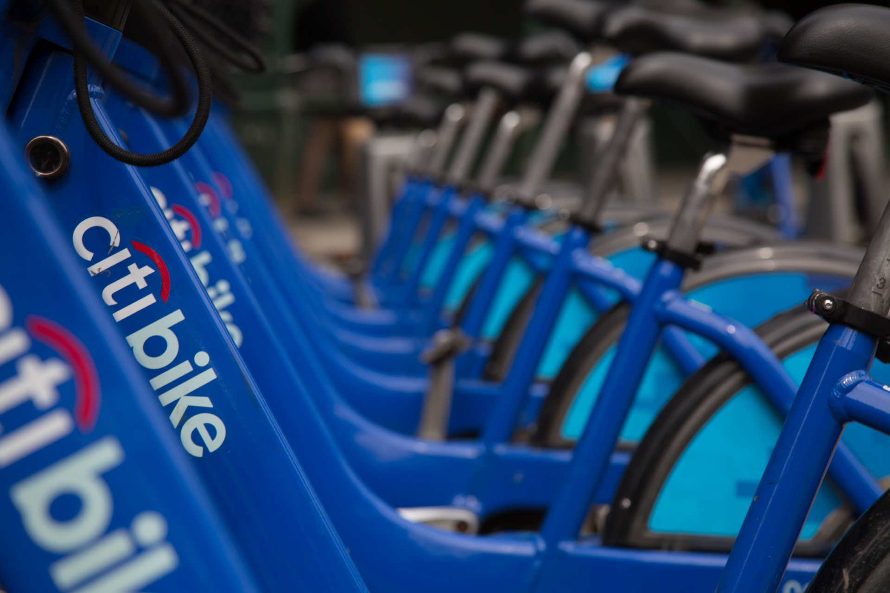

Images from New York's Bike Share




Citi Bike is New York City's bike sharing system, and the largest in the United States. Citi Bike launched in May 2013 and has become an essential part of New York's transportation network. Bike share came to New York City during the rise of the "sharing economy" and an economic recovery after the 2008 recession. It integrates very smoothly with the subway system, forming a vital relationship between the two by allowing an ease of transfer between bike and public transit. The NYC subway serves 5.5 million riders every weekday with more than 700 miles of track, which extends far beyond Citi Bike's reach. However, Citi Bike helps riders cut down on travel time by biking rather than walking or taking a bus or taxi, for the "last mile" to their destination.
Citi Bike is available for use 24 hours/day every day of the year, and riders have access to thousands of bikes at hundreds of stations across Manhattan, Brooklyn, Queens and Jersey City.
For more information on NYC's bike share, please go to the City Bike website.
Day Pass
$12: Unlimited 30-minute rides in a 24-hour period
3-Day Pass
$24: Unlimited 30-minute rides in a 72-hour period
Annual Membership
$14.95/month: Unlimited 45-minute rides
(Or pay $155/year and save 14%)